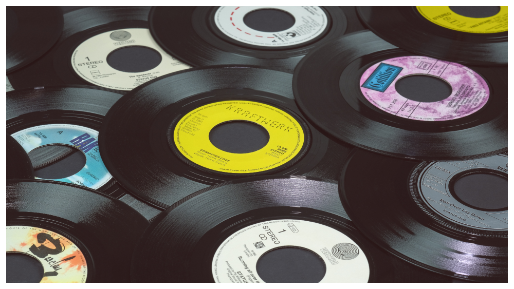

Larry Heard - Sceneries Not Songs Volume One



Información del álbum facilitada por discogs.com:
Fecha de lanzamiento: 1994
Géneros: Electronic
Estilos: House, Future Jazz, Downtempo, Ambient
Tracklist:
A1. Dolphin Dream
A2. Tahiti Dusk
A3. Midnight Movement
B1. Snowcaps
B2. Summertime Breeze
B3. Winter Wind & Chill
B4. Caribbean Coast
B5. One, Three, Five, Seven